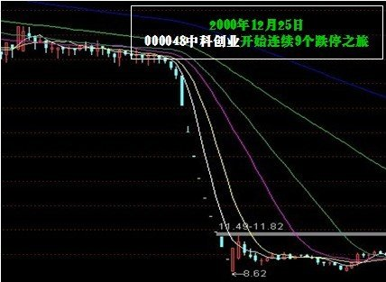
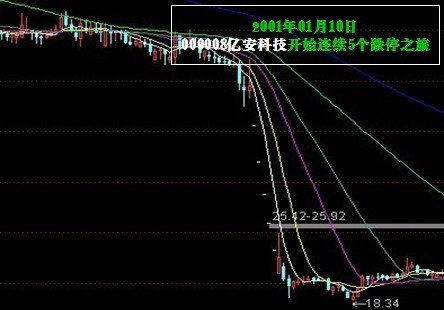
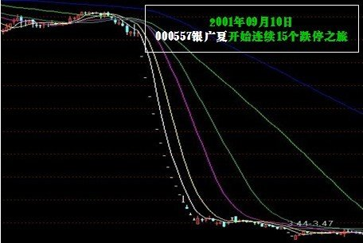
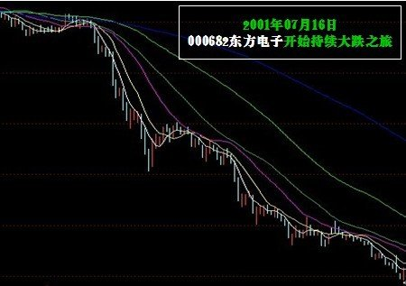
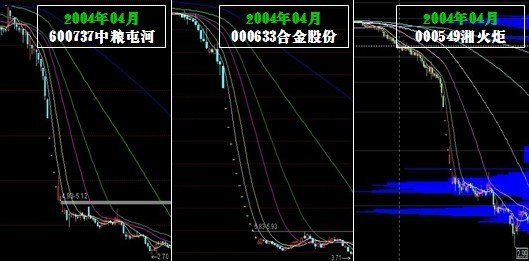
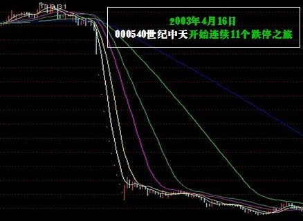

中國股票市場特色分析
莊股時代
從1990年到2004年“德隆系”的垮臺，中國股票市場在成立初期經歷了很長一段時間的莊股時代，主要是由於當時供給與需求的不均衡，相關法律制度的不完善導致。
所以翻看過去著名莊股的案例，我們可以看到，莊股的走勢具有非常強的趨勢性，通常一個上漲趨勢能夠持續數年之久，但是成交量卻極其稀少，表明莊股的籌碼已被牢牢控制在了莊家的手中。
莊股的盈利模式
利用莊家的信息壟斷帶來的相對於普通投資者的信息優勢實現盈利。當時市場中典型的莊股，都或多或少的製造盈利假象、或者，這些股票估值極高，但由於股價不斷上升帶來的盈利效應讓投資者越發堅信這些股票的投資價值，跟莊的投資策略風靡一時。
莊股的破滅
時至2001年，隨着全流通壓力籠罩着整個市場，莊股依靠資金推動的盈利模式已經難以爲繼，加上相關法律與配套監管措施的出臺，做莊的難度正在逐漸加大，這段時間，市場上許多著名的莊股有的以瀑布式下跌的方式（億安科技、中科創業，銀廣夏、藍田股份），有的則是以抵抗式下跌的方式來完成最終的“旁氏騙局”（如德隆系三劍客——湘火炬（現在的濰柴動力）、合金投資和新疆屯河）。隨意翻看九十年代前中期上市的股票，懸涯、瀑布這些莊股時代留下的烙印深深地刻畫在了每一隻曾經的莊股的走勢中。
隨着莊股的破滅，普通投資者由於信息不對稱最終遭受鉅額損失，這對當時的金融市場是一個不小的打擊。而漲跌停板制度，再次發揮了相反的作用，讓整個市場的情緒陷入一片混亂之中。
一些投資者選擇利用法律的武器維護自己的權益，這也促使了相關法律的進一步完善，銀廣夏理賠案件成爲了中國金融市場中第一起股民集體索賠案件，足以載入史冊。
創業板——新的莊股時代？
2009年10月30日，籌備了數年的創業板於深圳證券交易所鳴鑼開市，28支股票集體上市的雄偉景象創下了中國股市單日上市新股數量之最。翻看創業板市場過去幾年，尤其是近1~2年的表現不難看出諸如價格強趨勢性、個股同質化等這些莊股時代的痕跡與特徵，創業板是否正處於一個新的莊股時代，有待我們進一步驗證與探討。
案例討論：莊股時代的典型莊股
中科創業(000848.SZ)
1998年底，股市大戶朱煥良與股評名人K先生呂梁達成協議坐莊康達爾（中科創業的前身，該公司傳統行業虧損嚴重；為配合二級市場莊家炒作而包裝業績，導致企業財務虛數黑洞巨大；不僅沒有土地資源，實際上還捲入了某些經濟犯罪大案），並通過掌控上市公司董事會、虛假收購重組、媒體操縱等一系列手段，對中科創業股價實施操縱進行拉抬，該股在1999年、2000年股價每年翻番，在市場上風光無限。後由於兩大主角內訌與54億元資金鏈崩離，中科創業終於引發不可止歇的雪崩跌停，從2000年12月25日開始，一直平穩運行的深圳中科突然連拉9個跌停板，股價由33.59元跌落至13餘元，跌去50個億市值，參與炒作的中小投資者損失慘重。中科創業崩盤事件被稱為中國證券史上最為血腥和驚心動魄的莊股泡沫破裂事件。

億安科技(000006.SZ)
1998年10月至2001年2月間，億安集團動用14.856億元資金，通過註冊多家投資顧問公司，進行不轉移所有權的自買自賣炒作億安科技股票（億安科技現名ST寶利來），實現高度控盤操縱股價，“億安科技”股票從1999年10月25日起，在短短的70個交易日中，股價由26元左右不停歇地上漲，並突破百元大關，成為自滬深股票實施拆細後首只市價超過百元的股票，引起了市場的極大震動。
然而，“億安科技”股票出現的種種異常行為，早已被中國證監會注意，並與2001年1月10日宣佈宣佈查處涉嫌操縱“億安科技”股價案，對持有億安科技股票的主要帳戶進行重點監控。“億安科技”自2001年1月10日起連續5個跌停尚無止跌，被廣大股民稱為中國股市的神話終究破滅。“億安科技”股票大幅下挫造成崩盤，使得廣大小股東損失慘重、血本無歸。

銀廣夏（000557.SZ）
1999年至2001年間，中國股市上演一幕“績優股”造牛奇跡。根據銀廣夏（現名為*ST廣夏）1999年年報，銀廣夏的每股盈利當年達到前所未有的0.51元；其股價則先知先覺，從1999年12月30日的13.97元啟動，一路狂飆，至2000年4月19日漲至35.83元。次日實施了優厚的分紅方案10轉贈10後，即進入填權行情，於2000年12月29日完全填權並創下37.99元新高，折合為除權前的價格75.98元，較一年前啟動時的價位上漲440％，較之於1999年“5•19行情”發動前，則上漲了8倍多；2000年全年漲幅高居深滬兩市第二；2000年年報披露的業績再創“奇跡”，在股本擴大一倍基礎上，每股收益攀升至0.827元。“燦爛的未來”不符合常識，終被看穿。“真、假”兩重天2001年8月銀廣夏造假事件被媒體曝光，結束了這只大牛股的績優神話。一個月後複牌，連續的15個跌停，中小投資者損失極為慘重，從而引發了千名小股東集體訴訟事件。

藍田股份
1996年5月，藍田股份以“中國農業第一股”身份在在上交所上市。藍田股份曾經創造了中國股市常盛不衰的績優神話。這家以養殖、旅遊和飲料為主的上市公司，一亮相就顛覆了行業規律和市場法則，1996年發行上市以後，在財務數字上一直保持著神奇的增長速度：總資產規模從上市前的2．66億元發展到2000年末的28．38億元，增長了9倍，歷年年報的業績都在每股0．60元以上，最高達到1．15元。即使遭遇了1998年特大洪災以後，每股收益也達到了不可思議的0．81元，5年間股本擴張了360％，創造了中國農業企業罕見的“藍田神話”。 2001年11月，中央財經大學財經研究所研究員劉姝威在《金融內參》發表600字短文《應立即停止對藍田股份發放貸款》，此後藍田資金鏈開始斷裂。2002年1月，涉嫌提供虛假財務資訊，董事長保田等10名中高層管理人員被證監會拘傳接受調查；2002年3月，公司實行特別處理，股票簡稱變更為“ST生態” ；2002年5月，因連續3年虧損，暫停上市至今。以藍田股份為核心的“大藍田”非但套牢銀行貸款十幾億元，而且二級市場上流通市值“蒸發”超過25億元，商業銀行和中小投資者成為藍田案的最大受害者，二級市場上股價暴跌至幾乎不名一文，不少股民因此血本無歸。

東方電子(000682.SZ)
東方電子曾是滬深股市中出名的“績優股”，是國內高科技成長股神話的象徵。自1997年1月上市起，儘管公司股本年年高速擴張(1997年5月實施1996年度分配10股送4股公積金轉增6股，1998年度10送8股，1999年度中期10送6股公積金轉增4股，1999年度末期10送2.5股公積金轉增3.5股)，但公司的業績並沒有因股本高速擴張而稀釋，相反諸年利潤水準、每股收益、淨資產收益率等指標，一直保持在較高水準。正因如此，該股被普遍公認為高成長股的典範而受市場熱炒，股價從1997年上市之初的17.79元，一路攀升至2000年2月的最高價複權達448.93元，3年累計漲幅高達24.23倍。尤其是1999年底該股23246萬股內部職工股上市後不跌反漲，一個半月內從14.5元一路飆升至45元。中國證監會於2001年7月開始展開對東方電子的調查，東方電子股價“跳水”發生於2001年7月中旬，7月16日起由前一個交易日收盤17.44元開始異常下跌，到8月6日最低跌至10.28元。小幅反彈至12元多後，很快又開始一輪下跌，到11月中旬跌破5元。檢察機關指出，因東方電子提供虛假財務報告，導致其股票價格連續下跌，市值大幅縮水，共計給股東造成損失25.7億元。事實上，投資者的損失遠不止這個數字。

德隆系
唐萬新領導的“德隆系”在資本市場本稱為“中國第一焊莊”，而新疆德隆控制的三家上市公司“新疆屯河”、“合金股份”、“湘火炬”（合稱老三股，新疆屯河現名為中糧屯河，合金股份現名為ST合計，湘火炬已退市），在2000年至2003年間短短三年多的時間裡，由於焊莊的入駐股價分別上漲1,100%、1,500%和1,100%。“德隆系”股票能有如此巨大的漲幅，股市第一焊莊功不可沒，頻繁投資、轉讓及高送令股價飆升，將價格操縱發揮到極致，先後共使用了4萬個股東帳戶，有關聯關係的上市公司19家。然而“啤酒花事件”成為銀行嚴密防範企業貸款的導火線，德隆系難以再從銀行貸款並被迫向銀行歸還巨額貸款，德隆的資金鏈終於斷裂。從2004年4月14日，德隆系“三駕馬車”（新疆屯河、合金投資、湘火炬）連續高臺跳水，一個月時間市值蒸發156億，廣大中小投資也損失慘重。

世紀中天(000540.SZ)
資本大鱷劉志遠在世紀中天（現名中天城投）期間，為配合二級市場，以多元化為名，四處投資，這些項目大都石沉大海。但多年年報均顯示，公司控股和參股的幾家公司幾乎全線虧損。劉志遠的世紀興業、中投創業等關聯公司在北京、深圳等向銀行大量融資，從而實現二級市場股價操縱。從1994年底，世紀中天從10元以下啟動，中間經過數次大比例除權後，至2003年3月最高見到24元，該價格複權後相當於80元左右。據分析，世紀中天由於運作時間較長，主力持倉成本甚至降到3元左右。面對如此巨大的市場風險，很多券商得知“中聯控”操作的是“世紀中天”都不願與之合作，而廈門證券卻不加分析地引入“中聯控”把客戶的資金都變成了世紀中天的股票，“中聯控”後來也被多家媒體證實是世紀中天莊家所依賴的託盤機構。2003年3月，世紀中天經歷一年的盤局之後突然摸高至24元，有業內人士認為這是莊家即將拉高出貨的前兆。2003年4月16日，悲劇終於發生了，世紀中天開始了連續11個跌停後並步入了漫漫漫漫熊途，廣大投資者損失慘重。

散戶時代
隨着莊股時代的破滅，整個市場變得青黃不接，六神無主，參與者的主體大多數爲普通散戶。也就漸漸邁入了散戶時代。根據投資者模型的分析可以看出，這個時代的特點，就是個股之間，個股與指數之間走勢的，股價的趨勢性雖然沒有莊股時代那麼強，但仍然呈現出較爲顯著的正相關性。因爲投資者的投資決策大多隻根據價格來判斷，因而股價走勢的同質化、趨勢化也就不難理解了。
價值投資時代
近年來隨着基金、信託業的蓬勃發展以及合格境外投資者審批加速，市場迎來了大量機構投資者，並逐步實現了去散戶化，向價值投資時代過渡。
價值投資時代的一個顯著的特徵便是個股分化的加劇，股票的價格對市場指數的依賴程度降低，更多反映了自身的投資價值。
這一現象自2008年後便有所體現，並在2011年開始蔓延。2013年的創業板雄起。雖然筆者對這些個股分化是否真的反映了價值投資的理念，是否有諸如資金面等因素的影響不得而知，但這一現象的產生是市場進步的一個標誌，值得肯定。